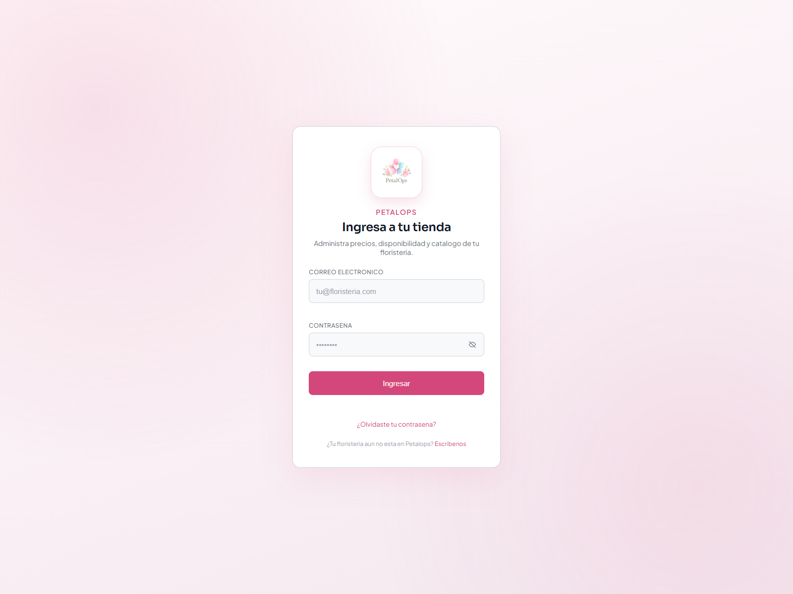
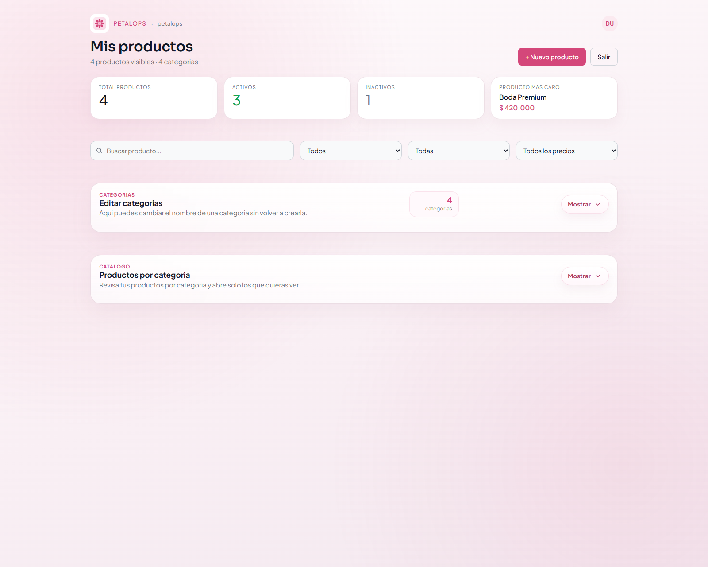
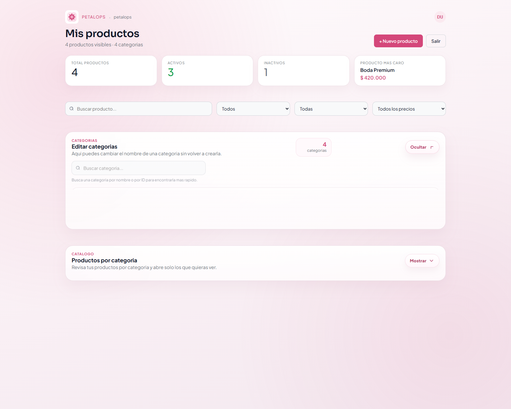
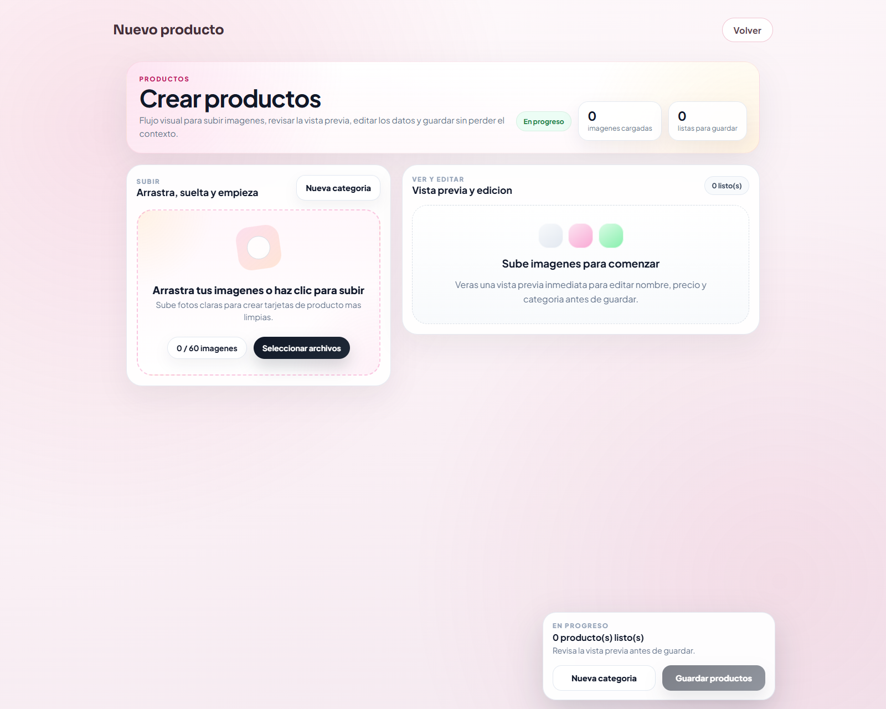
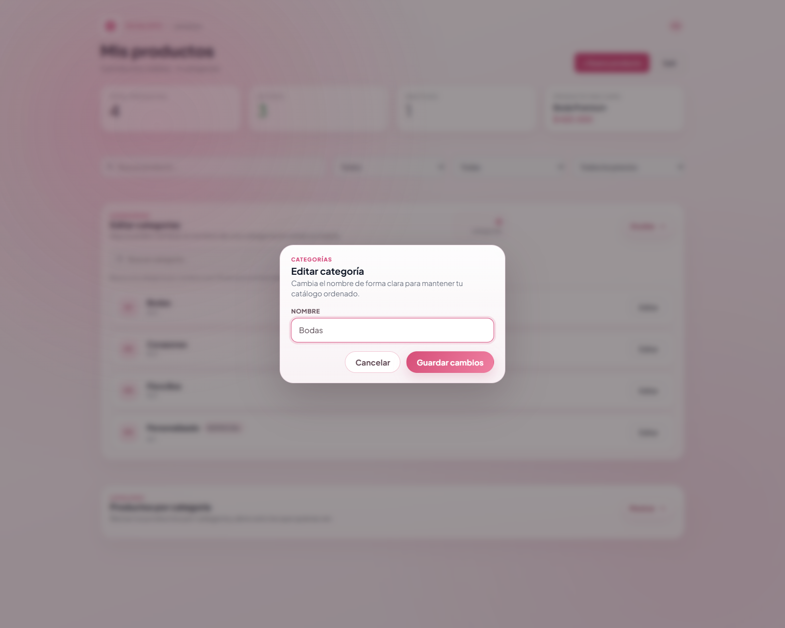
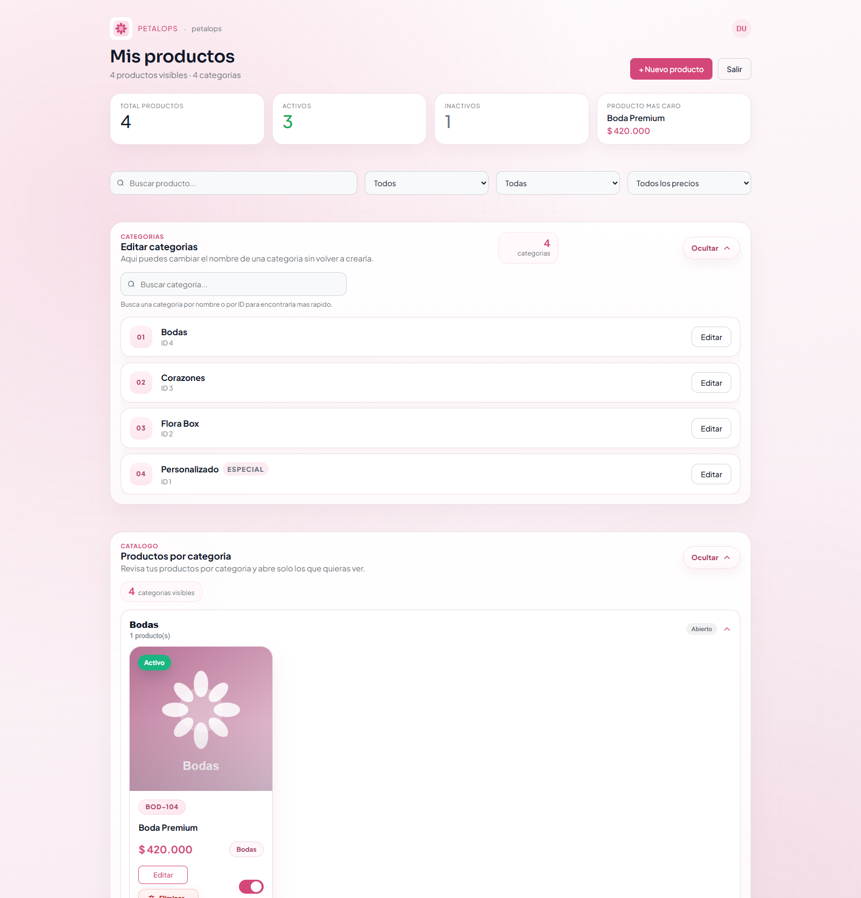
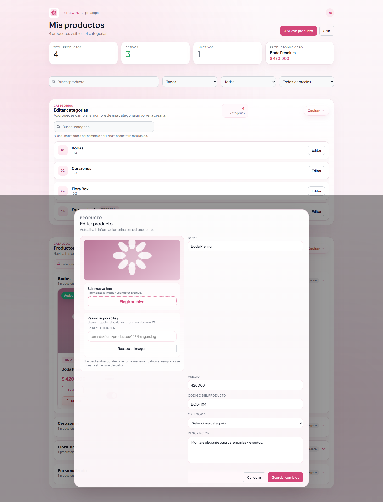

Manual de usuario
Petalops Admin
Este manual resume el uso principal de la aplicación de administración: iniciar sesión, revisar el catálogo, editar categorías y mantener actualizados los productos.
1. Acceso
Ingresa con tu correo, contraseña y tienda.
2. Vista principal
Consulta filtros, categorías y productos desde una sola pantalla.
3. Categorías
Abre la lista, busca una categoría y cámbiale el nombre.
4. Nuevo producto
Crea productos desde el flujo visual de subida y vista previa.
5. Productos
Explora por categoría y edita cada producto sin perder contexto.
Uso básico de la aplicación
Las capturas reflejan la interfaz actual para que el equipo pueda seguir el flujo real.







Si la pantalla se siente pesada, deja plegadas las secciones que no estás usando. El catálogo
está organizado justamente para que el panel siga respondiendo rápido aun con muchos productos.